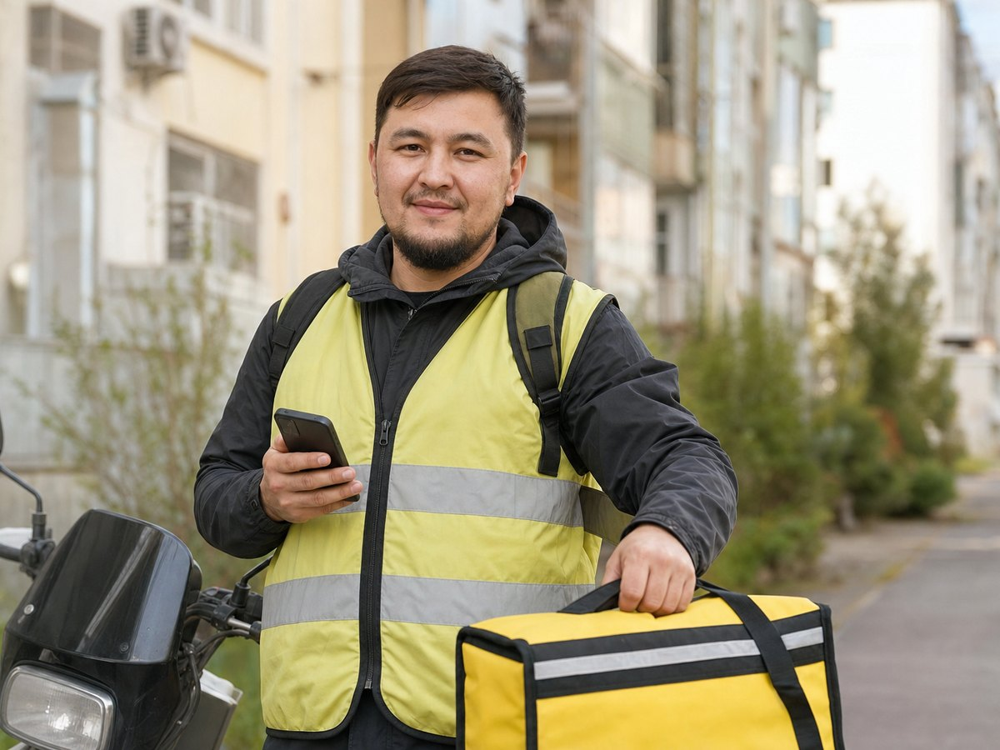
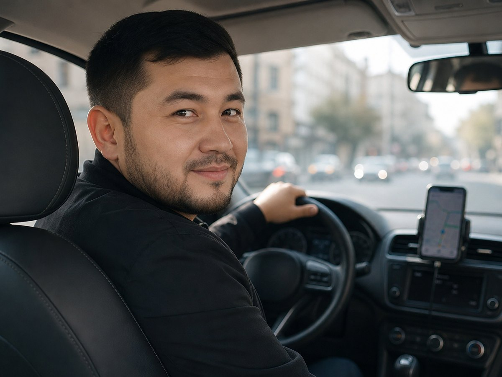

Если вы работаете в России курьером, на стройке, в такси или на складе, рано или поздно возникает вопрос: какие документы нужны иностранному гражданину, чтобы оформить заём или другую финансовую услугу. Ниже — ориентир по типовым требованиям. Точный список всегда определяет конкретная организация на своём сайте.

1. Паспорт иностранного гражданина
Базовый документ — действующий паспорт страны гражданства (часто паспорт гражданина Узбекистана, Таджикистана, Кыргызстана и других государств СНГ). Важно, чтобы срок действия не истёк и данные читались на фото/скане при онлайн-заявке.
2. Миграционная карта
Для многих сервисов нужна миграционная карта с отметкой о въезде в РФ. Она подтверждает законность пребывания на момент обращения. Если карта утеряна — уточняйте восстановление до подачи заявки: без неё часть компаний заявку не примет.
3. Регистрация / учёт по месту пребывания
Часто спрашивают подтверждение миграционного учёта (регистрация по месту пребывания). Требования различаются: кому-то достаточно адреса, кому-то — актуальный бланк учёта. Живёте у работодателя или в общежитии — заранее сверьте срок действия регистрации.
4. Российский номер телефона
Почти всегда нужен номер российского оператора на ваше имя или реально доступный вам: на него приходят коды подтверждения, СБП и статус заявки. Без рабочего номера онлайн-оформление обычно невозможно.

5. Банковская карта для зачисления
Для выдачи денег обычно нужна именная карта, открытая в РФ (или карта, на которую компания технически может перевести средства). Уточняйте у партнёра: иногда подходят карты определённых банков, иногда — перевод по СБП на номер телефона.
Хотите сразу сравнить предложения, где принимают иностранцев с паспортом СНГ? Можно перейти к подбору — без гарантии одобрения.
Смотреть предложения →6. Что ещё могут спросить
- Селфи с паспортом или короткое видео-подтверждение
- Сведения о работе и доходе (без «справок любой ценой» — только правдивые данные)
- Адрес фактического проживания в РФ
- Дополнительные документы по политике конкретной МФО
Как подготовиться, чтобы не потерять время
Сделайте чёткие фото паспорта (разворот с фото и страницы с данными), миграционной карты и регистрации при хорошем свете, без бликов. Проверьте, что телефон ловит SMS. Не отправляйте документы в сомнительные чаты — пользуйтесь официальной формой на сайте партнёра.
Помните: сервис на этой странице не выдаёт займы сам и не обещает одобрение. Решение и условия — только у финансовой организации после проверки.
Если документы уже под рукой — можно аккуратно перейти к партнёрским предложениям для иностранных граждан в РФ.
Перейти к оформлению →